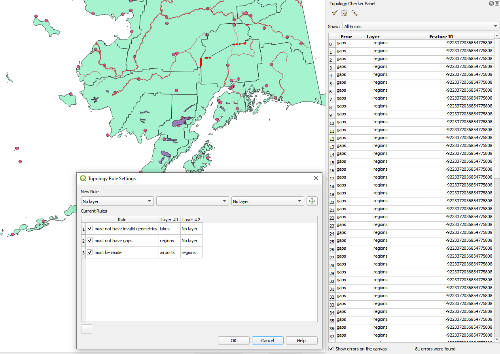

重要
翻訳は あなたが参加できる コミュニティの取り組みです。このページは現在 71.43% 翻訳されています。
25.2.5. トポロジチェッカープラグイン

図 25.16 トポロジチェッカープラグイン
トポロジとは、ある地理的領域の地物を表すポイント、ライン、およびポリゴン間の関係を記述するものです。トポロジチェッカープラグインを使うと、ベクタファイルを調べて、トポロジルールを使ってそのトポロジを確認することができます。これらのルールは、地物の空間関係がお互いに「等しい」か、「含んでいる」か、「覆っている」か、「覆われている」か、「交わっている」か、「離れている」か、「交差している」か、「重複している」か、「接触している」か、または「範囲内にある」かどうかをチェックします。ベクタデータにどのトポロジルールを適用するかは、個別の質問によります。（たとえば、ラインレイヤのはみ出しは通常は容認しないでしょうが、これが道路の行き止まりを表している場合には、ベクタレイヤからそれらを削除することはしないでしょう）。
QGISには、組み込みのトポロジ編集機能があり、新たな地物を誤りなく作るのに最適です。しかし、既存のデータエラーやユーザに起因するエラーを見つけるのは困難です。このプラグインは、リストになったルールを使ってそのようなエラーを見つけるのに役立ちます。
トポロジチェッカー プラグインを有効にする:
プラグイン メニューを開く
{kind=link}
{kind=link}
{kind=link}
トポロジチェッカー を有効にしたらそれを開き、 設定 を選んでトポロジルールを作ります。
設定 を選んでトポロジルールを作ります。
ポイントレイヤ に対しては、次のルールが利用可能です:
次の地物に重ならなければならない: ここではプロジェクト内のベクタレイヤを選択できます。指定されたベクタレイヤと重なっていないポイントは「エラー」フィールドに表示されます。
次の線の地物の両端に重ならなければならない: ここではプロジェクト内のラインレイヤを選択できます。
次のポリゴンの内側でなくてはならない: ここではプロジェクト内のポリゴンレイヤを選択できます。ポイントはポリゴンの内側にある必要があります。そうでない場合、QGISはそのポイントに対して「エラー」を書き込みます。
重複ジオメトリの地物があってはならない: あるポイントが2回以上描写される場合、それは「エラー」フィールドに表示されます。
不正なジオメトリがあってはならない: ジオメトリが正当かどうかをチェックします。
マルチパートがあってはならない: 全てのマルチパートポイントは「エラー」フィールドに書き込まれます。
ラインレイヤ に対しては、次のルールが利用可能です:
両端は次の点地物に重ならなければならない: ここではプロジェクトからポイントレイヤを選ぶことができます。
ダングル（懸垂線）があってはならない: ラインレイヤ内の線のはみ出しを表示します。
重複ジオメトリの地物があってはならない: あるライン地物が2回以上描写される場合、それは「エラー」フィールドに表示されます。
不正なジオメトリがあってはならない: ジオメトリが正当かどうかをチェックします。
マルチパートがあってはならない: あるジオメトリが、実際には単純な（シングルパート）ジオメトリの集合となっていることがあります。このようなジオメトリはマルチパートジオメトリと呼ばれています。それが単純なジオメトリの1種類だけを含んでいる場合、これをマルチポイント、マルチラインストリングまたはマルチポリゴンと呼びます。マルチパートのラインは全て「エラー」フィールドに書き込まれます。
（2つの地物を接続するだけの）疑似ノードがあってはならない: ラインジオメトリの端点は、他の2つのジオメトリと接続していなければなりません。他のジオメトリ1つだけと接続している場合には、この端点は疑似ノードと呼ばれます。
ポリゴンレイヤ に対しては、次のルールが利用可能です:
Must contain: Polygon layer must contain at least one point geometry from the second layer.
重複ジオメトリの地物があってはならない: 同じレイヤのポリゴンに同一のジオメトリを持つものがあってはならない。あるポリゴン地物が2回以上描写される場合、「エラー」フィールドに表示されます。
Must not have gaps: Adjacent polygons should not form gaps between them. Administrative boundaries could be mentioned as an example (US state polygons do not have any gaps between them...).
不正なジオメトリがあってはならない: ジオメトリが正当かどうかをチェックします。正当なジオメトリを定義するルールには次があります:
ポリゴンのリングは閉じている必要があります。
穴を定義するリングは、外側の境界を定義するリングの内側にある必要があります。
リングは自己交差してはいけません（互いに接触することも交差することもできません）。
リングは、1点で接触する場合を除き、他のリングに接触できません。
マルチパートがあってはならない: あるジオメトリが、実際には単純な（シングルパート）ジオメトリの集合となっていることがあります。このようなジオメトリはマルチパートジオメトリと呼ばれています。単純なジオメトリが1種類だけ含まれている場合には、これをマルチポイント、マルチラインストリングまたはマルチポリゴンと呼んでいます。例えば、複数の島からなる国は、マルチポリゴンとして表現できます。
Must not overlap: Adjacent polygons should not share common area.
Must not overlap with: Adjacent polygons from one layer should not share common area with polygons from another layer.
When you create a New rule click on the  Add rule
to include it to the Current rules.
You can enable or disable individual rules by clicking on the checkbox.
Right-clicking over a rule provides the following options:
Add rule
to include it to the Current rules.
You can enable or disable individual rules by clicking on the checkbox.
Right-clicking over a rule provides the following options:
Select All the rules
Activate or Deactivate the selected rules
Toggle activation of selected rules
Delete selected rules. This can also be achieved with the
 Delete selected rules button.
Delete selected rules button.
Press OK and then choose from the Topology checker panel:
 Validate All: applies the active rules to all the features
of the involved layer(s)
Validate All: applies the active rules to all the features
of the involved layer(s)or Validate Extent: applies the active rules to the features of the involved layer(s), within the current map canvas. The button is kept pushed and the results will update as the map canvas extent changes.
{kind=link}
Errors will show up in the table of results containing type of error, layer and feature ID. Use Filter errors by rule menu to filter the errors to a specific error type.
Check  Show errors on the canvas to show error location on the canvas.
Clicking a row in the table will zoom the map canvas to the concerned feature,
where you can use QGIS digitizing tools to fix the error.
Show errors on the canvas to show error location on the canvas.
Clicking a row in the table will zoom the map canvas to the concerned feature,
where you can use QGIS digitizing tools to fix the error.